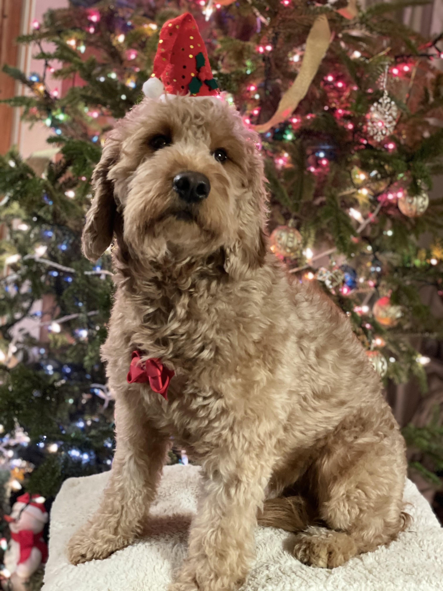

Spring '22 Binghamton University
ARTS 486
Special Studio Project: Graphic Design
Nathaly Uruchima
LinkedIn
Simplistic and detailed artwork.
Each piece of artwork created is a result from a blend of two concentrations, Computer Science and Graphic Design.
My approach to each project starts with an analytical mindset, planning and figuring out the execution based on requirements and the given time frame.
In the later stages of each project, an eye for detail is used to add those final details that give each project that personal touch.
